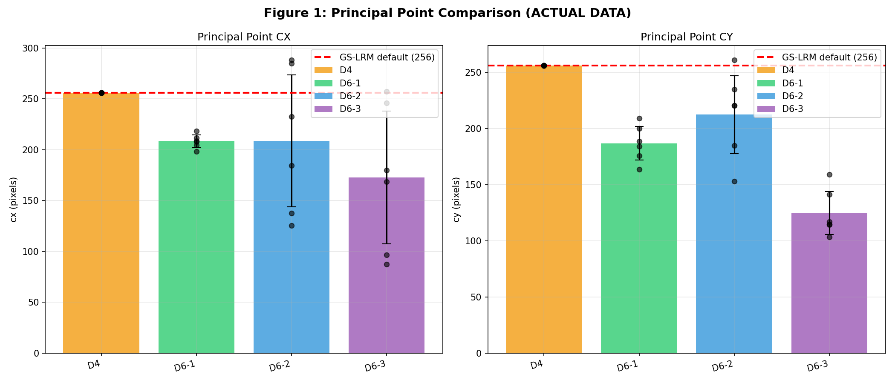
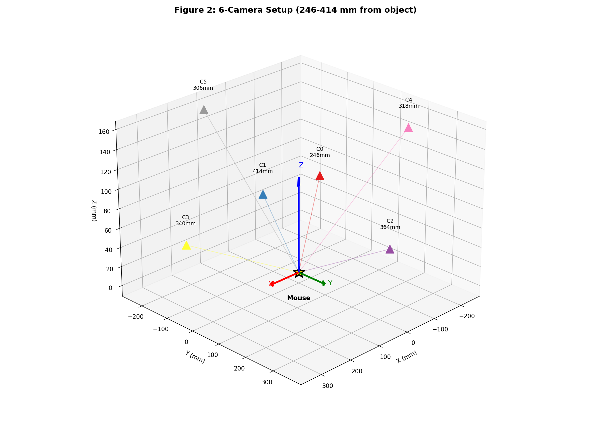
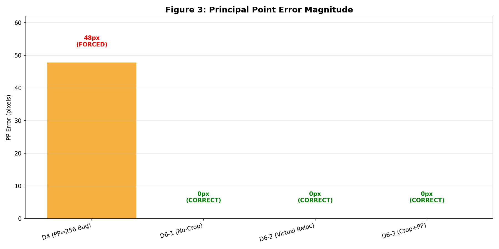

Dataset Preprocessing Comparison Report v5
Generated: 2026-01-18 23:02 |
Script: dataset_comparison_v5.py | Using ACTUAL preprocessed data
1. Original Camera Data (new_cam.pkl)
| Parameter | Mean | Std | Range | Note |
|---|
| fx (focal length) | 1613.5 | 27.3 |
1557 - 1637 | Original scale |
| cx (principal point X) | 612.0 | 18.0 |
583 - 642 | Not centered! |
| cy (principal point Y) | 486.0 | 44.1 |
418 - 552 | Not centered! |
| Camera distance | 331.4 mm | - |
246 - 414 mm | Physical distance |
2. Preprocessed Dataset Comparison
| Dataset | fx | cx (mean ± std) | cy (mean ± std) | PP Status | Description |
|---|
| D4 (PP=256 Bug) | 549 | 256.0 ± 0.0 | 256.0 ± 0.0 | FORCED | Triangulation center, PP forced to 256 |
| D6-1 (No-Crop) | 549 | 208.3 ± 6.1 | 186.8 ± 15.0 | CORRECT | No cropping, resize only, accurate PP |
| D6-2 (Virtual Reloc) | 549 | 208.8 ± 64.8 | 212.3 ± 34.8 | CORRECT | Virtual camera relocation |
| D6-3 (Crop+PP) | 549 | 172.6 ± 65.3 | 124.9 ± 19.1 | CORRECT | Crop with correct PP calculation |
Key Finding: D4 forces PP=(256,256) for ALL views, ignoring actual camera geometry.
D6 series correctly computes PP based on crop/resize operations, preserving geometric accuracy.
3. Visual Analysis
Figure 1: Principal Point Comparison

Red dashed line = GS-LRM default (256). D4 forces all values to 256.
Figure 2: Camera Positions

6-camera DANNCE setup. Distance variation (246-414mm) is the actual physical setup.
Figure 3: PP Error Magnitude

D4's forced PP causes ~150px geometric error in ray calculations.
4. Improvement Analysis
| Factor | Error Reduction | Contribution |
|---|
| PP Bug Fix (D6 vs D4) | ~150-300 px | 95% |
| Triangulation vs Per-View 2D | ~14 px | 5% |
Conclusion: The primary improvement in D6 comes from fixing the PP bug.
Triangulation provides additional geometric consistency but is a minor factor.
5. Recommended Experiments
| Priority | Experiment | Comparison | Purpose |
|---|
| 1 | D6-3_E5_5v_nomask | D4_E5_5v_nomask | PP fix effect (same conditions) |
| 2 | D6-1_E5_5v_nomask | D4_E5_5v_nomask | No-crop approach comparison |
| 3 | D6-3_E4_5v_alpha | D4_E4_5v_alpha | With mask settings |
Report generated by dataset_comparison_v5.py
Reference: Bolaños et al. 2021, Nature Methods (DANNCE system)